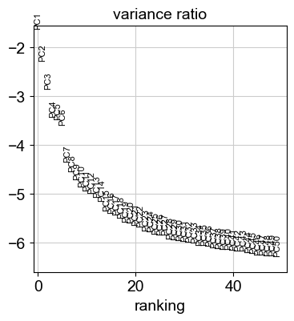

# set first time to False to avoid multiple downloads
first_time = False
print(first_time)FalseThis notebook is not compatible with this python 3.12. Some issues with pickle data and celltypist.
```{bash}
conda create --name scanpy-tutorial python=3.9
conda activate scanpy-tutorial
conda install nb_conda_kernels jupyter_server
pip install nbclient nbformat
```# set first time to False to avoid multiple downloads
first_time = False
print(first_time)Falsetry:
import anndata as ad
except ImportError:
%pip install anndata
import anndata as ad
try:
import pooch
except ImportError:
%pip install pooch
import pooch
try:
import scanpy as sc
except ImportError:
%pip install scanpy
import scanpy as sc
try:
import scrublet
except ImportError:
%pip install scrublet
import scrublet
try:
import skimage
except ImportError:
%pip install scikit-image
import skimage
try:
import igraph
except ImportError:
%pip install igraph
import igraphsc.settings.set_figure_params(dpi=50, facecolor="white")The data used in this basic preprocessing and clustering tutorial was collected from bone marrow mononuclear cells of healthy human donors and was part of openproblem’s NeurIPS 2021 benchmarking dataset {cite}luecken2021. The samples used in this tutorial were measured using the 10X Multiome Gene Expression and Chromatin Accessability kit.
We are reading in the count matrix into an AnnData object, which holds many slots for annotations and different representations of the data.
EXAMPLE_DATA = pooch.create(
path=pooch.os_cache("scverse_tutorials"),
base_url="doi:10.6084/m9.figshare.22716739.v1/",
)
EXAMPLE_DATA.load_registry_from_doi()samples = {
"s1d1": "s1d1_filtered_feature_bc_matrix.h5",
"s1d3": "s1d3_filtered_feature_bc_matrix.h5",
}
adatas = {}
for sample_id, filename in samples.items():
path = EXAMPLE_DATA.fetch(filename)
sample_adata = sc.read_10x_h5(path)
sample_adata.var_names_make_unique()
adatas[sample_id] = sample_adata
adata = ad.concat(adatas, label="sample")
adata.obs_names_make_unique()/Users/haekyungim/miniconda3/envs/scanpy-tutorial/lib/python3.9/site-packages/anndata/_core/anndata.py:1756: UserWarning: Variable names are not unique. To make them unique, call `.var_names_make_unique`.
utils.warn_names_duplicates("var")
/Users/haekyungim/miniconda3/envs/scanpy-tutorial/lib/python3.9/site-packages/anndata/_core/anndata.py:1756: UserWarning: Variable names are not unique. To make them unique, call `.var_names_make_unique`.
utils.warn_names_duplicates("var")
/Users/haekyungim/miniconda3/envs/scanpy-tutorial/lib/python3.9/site-packages/anndata/_core/anndata.py:1756: UserWarning: Variable names are not unique. To make them unique, call `.var_names_make_unique`.
utils.warn_names_duplicates("var")
/Users/haekyungim/miniconda3/envs/scanpy-tutorial/lib/python3.9/site-packages/anndata/_core/anndata.py:1756: UserWarning: Variable names are not unique. To make them unique, call `.var_names_make_unique`.
utils.warn_names_duplicates("var")
/Users/haekyungim/miniconda3/envs/scanpy-tutorial/lib/python3.9/site-packages/anndata/_core/anndata.py:1754: UserWarning: Observation names are not unique. To make them unique, call `.obs_names_make_unique`.
utils.warn_names_duplicates("obs")The data contains 8,785 cells and 36,601 measured genes. This tutorial includes a basic preprocessing and clustering workflow.
The scanpy function {func}~scanpy.pp.calculate_qc_metrics calculates common quality control (QC) metrics, which are largely based on calculateQCMetrics from scater {cite}McCarthy2017. One can pass specific gene population to {func}~scanpy.pp.calculate_qc_metrics in order to calculate proportions of counts for these populations. Mitochondrial, ribosomal and hemoglobin genes are defined by distinct prefixes as listed below.
# mitochondrial genes
adata.var["mt"] = adata.var_names.str.startswith("MT-") # "MT-" for human, "Mt-" for mouse
# ribosomal genes
adata.var["ribo"] = adata.var_names.str.startswith(("RPS", "RPL"))
# hemoglobin genes
adata.var["hb"] = adata.var_names.str.contains("^HB[^(P)]")sc.pp.calculate_qc_metrics(adata, qc_vars=["mt", "ribo", "hb"], inplace=True, log1p=True)One can now inspect violin plots of some of the computed QC metrics:
sc.pl.violin(adata, ["n_genes_by_counts", "total_counts", "pct_counts_mt"], jitter=0.4, multi_panel=True)
Additionally, it is useful to consider QC metrics jointly by inspecting a scatter plot colored by pct_counts_mt.
sc.pl.scatter(adata, "total_counts", "n_genes_by_counts", color="pct_counts_mt")Based on the QC metric plots, one could now remove cells that have too many mitochondrial genes expressed or too many total counts by setting manual or automatic thresholds. However, it proved to be beneficial to apply a very permissive filtering strategy in the beginning for your single-cell analysis and filter low quality cells during clustering or revisit the filtering again at a later point. We therefore now only filter cells with less than 100 genes expressed and genes that are detected in less than 3 cells.
Additionally, it is important to note that for datasets with multiple batches, quality control should be performed for each sample individually as quality control thresholds can very substantially between batches.
sc.pp.filter_cells(adata, min_genes=100)
sc.pp.filter_genes(adata, min_cells=3)As a next step, we run a doublet detection algorithm. Identifying doublets is crucial as they can lead to misclassifications or distortions in downstream analysis steps. Scanpy contains the doublet detection method Scrublet {cite}Wolock2019. Scrublet predicts cell doublets using a nearest-neighbor classifier of observed transcriptomes and simulated doublets. {func}scanpy.pp.scrublet adds doublet_score and predicted_doublet to .obs. One can now either filter directly on predicted_doublet or use the doublet_score later during clustering to filter clusters with high doublet scores.
sc.pp.scrublet(adata, batch_key="sample")Alternative methods for doublet detection within the scverse ecosystem are DoubletDetection and SOLO. You can read more about these in the Doublet Detection chapter of Single Cell Best Practices.
The next preprocessing step is normalization. A common approach is count depth scaling with subsequent log plus one (log1p) transformation. Count depth scaling normalizes the data to a “size factor” such as the median count depth in the dataset, ten thousand (CP10k) or one million (CPM, counts per million). The size factor for count depth scaling can be controlled via target_sum in pp.normalize_total. We are applying median count depth normalization with log1p transformation (AKA log1PF).
# Saving count data
adata.layers["counts"] = adata.X.copy()# Normalizing to median total counts
sc.pp.normalize_total(adata)
# Logarithmize the data:
sc.pp.log1p(adata)As a next step, we want to reduce the dimensionality of the dataset and only include the most informative genes. This step is commonly known as feature selection. The scanpy function pp.highly_variable_genes annotates highly variable genes by reproducing the implementations of Seurat {cite}Satija2015, Cell Ranger {cite}Zheng2017, and Seurat v3 {cite}stuart2019comprehensive depending on the chosen flavor.
sc.pp.highly_variable_genes(adata, n_top_genes=2000, batch_key="sample")sc.pl.highly_variable_genes(adata)Reduce the dimensionality of the data by running principal component analysis (PCA), which reveals the main axes of variation and denoises the data.
sc.tl.pca(adata)Let us inspect the contribution of single PCs to the total variance in the data. This gives us information about how many PCs we should consider in order to compute the neighborhood relations of cells, e.g. used in the clustering function {func}~scanpy.tl.leiden or {func}~scanpy.tl.tsne. In our experience, often a rough estimate of the number of PCs does fine.
sc.pl.pca_variance_ratio(adata, n_pcs=50, log=True)
Let us compute the neighborhood graph of cells using the PCA representation of the data matrix.
sc.pp.neighbors(adata)/Users/haekyungim/miniconda3/envs/scanpy-tutorial/lib/python3.9/site-packages/tqdm/auto.py:21: TqdmWarning: IProgress not found. Please update jupyter and ipywidgets. See https://ipywidgets.readthedocs.io/en/stable/user_install.html
from .autonotebook import tqdm as notebook_tqdmWe suggest embedding the graph in two dimensions using UMAP (McInnes et al., 2018), see below.
sc.tl.umap(adata)We can now visualize the UMAP according to the sample.
sc.pl.umap(adata, color="sample")Even though the data considered in this tutorial includes two different samples, we only observe a minor batch effect and we can continue with clustering and annotation of our data.
If you inspect batch effects in your UMAP it can be beneficial to integrate across samples and perform batch correction/integration.
As with Seurat and many other frameworks, we recommend the Leiden graph-clustering method (community detection based on optimizing modularity) {cite}traag2019louvain. Note that Leiden clustering directly clusters the neighborhood graph of cells, which we already computed in the previous section.
sc.tl.leiden(adata, flavor="igraph")sc.pl.umap(adata, color=["leiden"])As indicated before, we will now re-assess our filtering strategy by visualizing different QC metrics using UMAP.
adata.obs["predicted_doublet"] = adata.obs["predicted_doublet"].astype("category")
sc.pl.umap(
adata,
color=["leiden", "predicted_doublet", "doublet_score"],
# increase horizontal space between panels
wspace=0.5,
)We can now subset the AnnData object to exclude cells predicted as doublets:
adata = adata[~adata.obs["predicted_doublet"].to_numpy()].copy()sc.pl.umap(
adata, color=["leiden", "log1p_total_counts", "pct_counts_mt", "log1p_n_genes_by_counts"], wspace=0.5, ncols=2
)try:
import celltypist as ct
except ImportError:
%pip install celltypist
import celltypist as ct
try:
import decoupler as dc
except ImportError:
%pip install decoupler
import decoupler as dcWe have now reached a point where we have obtained a set of cells with decent quality, and we can proceed to their annotation to known cell types. Typically, this is done using genes that are exclusively expressed by a given cell type, or in other words these genes are the marker genes of the cell types, and are thus used to distinguish the heterogeneous groups of cells in our data. Previous efforts have collected and curated various marker genes into available resources, such as CellMarker, TF-Marker, and PanglaoDB.
Commonly and classically, cell type annotation uses those marker genes subsequent to the grouping of the cells into clusters. So, let’s generate a set of clustering solutions which we can then use to annotate our cell types. Here, we will use the Leiden clustering algorithm which will extract cell communities from our nearest neighbours graph.
sc.tl.leiden(adata, flavor="igraph", key_added="leiden_res0_02", resolution=0.02)
sc.tl.leiden(adata, flavor="igraph", key_added="leiden_res0_5", resolution=0.5)
sc.tl.leiden(adata, flavor="igraph", key_added="leiden_res2", resolution=2)Notably, the number of clusters that we define is largely arbitrary, and so is the resolution parameter that we use to control for it. As such, the number of clusters is ultimately bound to the stable and biologically-meaningful groups that we can ultimately distringuish, typically done by experts in the corresponding field or by using expert-curated prior knowledge in the form of markers.
sc.pl.umap(
adata,
color=["leiden_res0_02", "leiden_res0_5", "leiden_res2"],
legend_loc="on data",
)Though UMAPs should not be over-interpreted, here we can already see that in the highest resolution our data is over-clustered, while the lowest resolution is likely grouping cells which belong to distinct cell identities.
Let’s define a set of marker genes for the main cell types that we expect to see in this dataset. These were adapted from Single Cell Best Practices annotation chapter, for a more detailed overview and best practices in cell type annotation, we refer the user to it.
marker_genes = {
"CD14+ Mono": ["FCN1", "CD14"],
"CD16+ Mono": ["TCF7L2", "FCGR3A", "LYN"],
# Note: DMXL2 should be negative
"cDC2": ["CST3", "COTL1", "LYZ", "DMXL2", "CLEC10A", "FCER1A"],
"Erythroblast": ["MKI67", "HBA1", "HBB"],
# Note HBM and GYPA are negative markers
"Proerythroblast": ["CDK6", "SYNGR1", "HBM", "GYPA"],
"NK": ["GNLY", "NKG7", "CD247", "FCER1G", "TYROBP", "KLRG1", "FCGR3A"],
"ILC": ["ID2", "PLCG2", "GNLY", "SYNE1"],
"Naive CD20+ B": ["MS4A1", "IL4R", "IGHD", "FCRL1", "IGHM"],
# Note IGHD and IGHM are negative markers
"B cells": ["MS4A1", "ITGB1", "COL4A4", "PRDM1", "IRF4", "PAX5", "BCL11A", "BLK", "IGHD", "IGHM"],
"Plasma cells": ["MZB1", "HSP90B1", "FNDC3B", "PRDM1", "IGKC", "JCHAIN"],
"Plasmablast": ["XBP1", "PRDM1", "PAX5"], # Note PAX5 is a negative marker
"CD4+ T": ["CD4", "IL7R", "TRBC2"],
"CD8+ T": ["CD8A", "CD8B", "GZMK", "GZMA", "CCL5", "GZMB", "GZMH", "GZMA"],
"T naive": ["LEF1", "CCR7", "TCF7"],
"pDC": ["GZMB", "IL3RA", "COBLL1", "TCF4"],
}def group_max(adata: sc.AnnData, groupby: str) -> str:
import pandas as pd
agg = sc.get.aggregate(adata, by=groupby, func="mean")
return pd.Series(agg.layers["mean"].sum(1), agg.obs[groupby]).idxmax()sc.pl.dotplot(adata, marker_genes, groupby="leiden_res0_02")
Here, we can see that cluster {eval}group_max(adata[:, marker_genes["NK"]], "leiden_res0_02") perhaps contains an admixture of monocytes and dendritic cells, while in cluster {eval}group_max(adata[:, marker_genes["B cells"]], "leiden_res0_02") we have different populations of B lymphocytes. Thus, we should perhaps consider a higher clustering resolution.
sc.pl.dotplot(adata, marker_genes, groupby="leiden_res0_5")This seems like a resolution that suitable to distinguish most of the different cell types in our data. Ideally, one would look specifically into each cluster, and attempt to subcluster those if required.
In addition to using marker collections to annotate our labels, there exist approaches to automatically annotate scRNA-seq datasets. One such tool is CellTypist, which uses gradient-descent optimised logistic regression classifiers to predict cell type annotations.
First, we need to retrive the CellTypist models that we wish to use, in this case we will use models with immune cell type and subtype populations generated using 20 tissues from 18 studies (Domínguez Conde, et al. 2022).
if first_time:
ct.models.download_models(model=["Immune_All_Low.pkl"], force_update=True)Then we predict the major cell type annotations. In this case we will enable majority_voting, which will assign a label to the clusters that we obtained previously.
model = ct.models.Model.load(model="Immune_All_Low.pkl")
predictions = ct.annotate(adata, model="Immune_All_Low.pkl", majority_voting=True, over_clustering="leiden_res0_5")
# convert back to anndata||
adata = predictions.to_adata()⚠️ Warning: invalid expression matrix, expect ALL genes and log1p normalized expression to 10000 counts per cell. The prediction result may not be accurate
🔬 Input data has 16828 cells and 23427 genes
🔗 Matching reference genes in the model
🧬 5852 features used for prediction
⚖️ Scaling input data
🖋️ Predicting labels
✅ Prediction done!
🗳️ Majority voting the predictions
✅ Majority voting done!Let’s examine the results of automatic clustering:
sc.pl.umap(adata, color="majority_voting", ncols=1)Note that our previously ‘Unknown’ cluster is now assigned as ‘Pro-B cells’.
Automatic cell type labelling with methods that require pre-trained models will not always work as smoothly, as such classifiers need to be trained on and be representitive for a given tissue and the cell types within it. So, as a more generalizable approach to annotate the cells, we can also use the marker genes from any database, for example PanglaoDB. Here we will use it with simple multi-variate linear regression, implemented in decoupler. Essentially, this will test if any collection of genes are enriched in any of the cells. Ultimately, this approach is similar to many other marker-based classifiers.
Let’s get canonical cell markers using with decoupler which queries the OmniPath metadata-base to obtain the PanglaoDB marker gene database with cannonical cell type markers.
# Query Omnipath and get PanglaoDB
markers = dc.get_resource(name="PanglaoDB", organism="human")
# Print initial information about the markers DataFrame
print("Initial markers DataFrame shape:", markers.shape)
# Convert canonical_marker to boolean - fixing the conversion
markers["canonical_marker"] = markers["canonical_marker"].astype(str).map({'True': True, 'False': False})
# Keep canonical cell type markers alone
markers = markers[markers["canonical_marker"] == True]
print("\nShape after filtering canonical markers:", markers.shape)
# Remove duplicated entries
markers = markers[~markers.duplicated(["cell_type", "genesymbol"])]
print("\nShape after removing duplicates:", markers.shape)
# Convert gene symbols to uppercase in both datasets to ensure consistent matching
markers["genesymbol"] = markers["genesymbol"].str.upper()
adata.var_names = adata.var_names.str.upper()
# Print overlap statistics
print("\nNumber of unique genes in markers:", len(markers["genesymbol"].unique()))
print("Number of genes in adata:", adata.n_vars)
print("Number of overlapping genes:", len(set(markers["genesymbol"].unique()) & set(adata.var_names)))
# Print some example cell types and their marker counts
print("\nNumber of markers per cell type:")
print(markers.groupby("cell_type")["genesymbol"].count().sort_values(ascending=False).head())
# Run MLM with a lower min_n value
dc.run_mlm(mat=adata, net=markers, weight=None, source="cell_type", target="genesymbol", verbose=True, use_raw=False, min_n=2)Initial markers DataFrame shape: (8461, 14)
Shape after filtering canonical markers: (5527, 14)
Shape after removing duplicates: (5502, 14)
Number of unique genes in markers: 3366
Number of genes in adata: 23427
Number of overlapping genes: 2424
Number of markers per cell type:
cell_type
Endothelial cells 192
Macrophages 166
Dendritic cells 147
Mast cells 144
Hepatocytes 135
Name: genesymbol, dtype: int64
Running mlm on mat with 16828 samples and 23427 targets for 154 sources. 0%| | 0/2 [00:00<?, ?it/s] 50%|█████ | 1/2 [00:03<00:03, 3.56s/it]100%|██████████| 2/2 [00:06<00:00, 2.92s/it]100%|██████████| 2/2 [00:06<00:00, 3.02s/it]The obtained results are stored in the .obsm key, with mlm_estimate representing coefficient t-values:
adata.obsm["mlm_estimate"].head()| Acinar cells | Adipocyte progenitor cells | Adipocytes | Adrenergic neurons | Airway epithelial cells | Airway goblet cells | Alpha cells | Alveolar macrophages | Anterior pituitary gland cells | Astrocytes | ... | T regulatory cells | Tanycytes | Taste receptor cells | Thymocytes | Trichocytes | Trigeminal neurons | Trophoblast cells | Trophoblast progenitor cells | Tuft cells | Urothelial cells | |
|---|---|---|---|---|---|---|---|---|---|---|---|---|---|---|---|---|---|---|---|---|---|
| AAACCCAAGGATGGCT-1 | -0.829379 | -0.192387 | -0.433855 | -0.259944 | 0.105843 | -0.896782 | 0.286354 | 0.445317 | -0.360782 | 0.482100 | ... | -1.861577 | 0.653052 | -0.914405 | 2.135190 | -0.409456 | -0.240998 | 0.870413 | 2.188858 | 1.590695 | -0.726171 |
| AAACCCAAGGCCTAGA-1 | 0.305256 | -0.409719 | 0.115441 | -0.659562 | -0.503354 | -0.793676 | 0.980069 | -3.680857 | -0.313018 | 1.018442 | ... | -1.191339 | -0.122365 | -0.713158 | -0.302480 | -0.585186 | 0.926535 | -0.557362 | -0.477797 | 2.051256 | -1.071484 |
| AAACCCAAGTGAGTGC-1 | 0.367563 | -0.238991 | 0.066879 | -0.181742 | 0.530131 | -0.246711 | -0.459827 | -0.713275 | -0.197698 | -1.156477 | ... | -1.127890 | -0.514065 | -0.735793 | 0.894280 | -0.270854 | -0.110214 | 2.406705 | -0.221142 | 1.700772 | -0.384683 |
| AAACCCACAAGAGGCT-1 | -1.453875 | 0.022096 | -1.493422 | -0.303853 | -1.110833 | -1.383801 | 1.080116 | 0.622730 | 0.170097 | -1.103424 | ... | -1.076105 | -0.212070 | -0.546337 | 0.964560 | -0.583426 | -0.543244 | 0.502228 | 0.681523 | 3.035343 | -1.010428 |
| AAACCCACATCGTGGC-1 | 1.160588 | -0.435748 | -1.242875 | -0.100550 | -1.379393 | -0.165989 | -0.541564 | -0.351312 | -0.015558 | 0.188370 | ... | 1.963929 | -0.292627 | 1.647266 | -1.076357 | -0.191659 | -0.791095 | -0.017454 | -0.156497 | -0.078420 | -0.396215 |
5 rows × 154 columns
To visualize the obtianed scores, we can re-use any of scanpy’s plotting functions. First though, we will extract them from the adata object.
acts = dc.get_acts(adata=adata, obsm_key="mlm_estimate")
sc.pl.umap(
acts,
color=[
"majority_voting",
"B cells",
"T cells",
"Monocytes",
"Erythroid-like and erythroid precursor cells",
"NK cells",
],
wspace=0.5,
ncols=3,
)These results further confirm the our automatic annotation with Celltypist. In addition, here we can also transfer the max over-representation score estimates to assign a label to each cluster.
mean_enr = dc.summarize_acts(acts, groupby="leiden_res0_5", min_std=1.0)
annotation_dict = dc.assign_groups(mean_enr)
adata.obs["dc_anno"] = [annotation_dict[clust] for clust in adata.obs["leiden_res0_5"]]Let’s compare all resulting annotations here
sc.pl.umap(adata, color=["majority_voting", "dc_anno"], ncols=1)... storing 'dc_anno' as categoricalGreat. We can see that the different approaches to annotate the data are largely concordant. Though, these annotations are decent, cell type annotation is laborous and repetitive task, one which typically requires multiple rounds of sublucstering and re-annotation. Nevertheless, we now have a good basis with which we can further proceed with manually refining our annotations.
Furthermore, one can also calculate marker genes per cluster and then look up whether we can link those marker genes to any known biology, such as cell types and/or states. This is typically done using simple statistical tests, such as Wilcoxon and t-test, for each cluster vs the rest.
# Obtain cluster-specific differentially expressed genes
sc.tl.rank_genes_groups(adata, groupby="leiden_res0_5")
# Filter those
sc.tl.filter_rank_genes_groups(adata, min_fold_change=1.5)We can then visualize the top 5 differentially-expressed genes on a dotplot.
sc.pl.rank_genes_groups_dotplot(adata, groupby="leiden_res0_5", standard_scale="var", n_genes=5)WARNING: dendrogram data not found (using key=dendrogram_leiden_res0_5). Running `sc.tl.dendrogram` with default parameters. For fine tuning it is recommended to run `sc.tl.dendrogram` independently.We see that LYZ, ACT8, S100A6, S100A4, and CST3 are all highly expressed in cluster 3. Let’s visualize those at the UMAP space:
cluster3_genes = ["LYZ", "ACTB", "S100A6", "S100A4", "CST3"]
sc.pl.umap(adata, color=[*cluster3_genes, "leiden_res0_5"], legend_loc="on data", frameon=False, ncols=3)
Similarly, we can also generate a Violin plot with the distrubtions of the same genes across the clusters.
sc.pl.violin(adata, keys=cluster3_genes[0:3], groupby="leiden_res0_5", multi_panel=True)Using categorical units to plot a list of strings that are all parsable as floats or dates. If these strings should be plotted as numbers, cast to the appropriate data type before plotting.
Using categorical units to plot a list of strings that are all parsable as floats or dates. If these strings should be plotted as numbers, cast to the appropriate data type before plotting.
Using categorical units to plot a list of strings that are all parsable as floats or dates. If these strings should be plotted as numbers, cast to the appropriate data type before plotting.
Using categorical units to plot a list of strings that are all parsable as floats or dates. If these strings should be plotted as numbers, cast to the appropriate data type before plotting.
Using categorical units to plot a list of strings that are all parsable as floats or dates. If these strings should be plotted as numbers, cast to the appropriate data type before plotting.
Using categorical units to plot a list of strings that are all parsable as floats or dates. If these strings should be plotted as numbers, cast to the appropriate data type before plotting.
Using categorical units to plot a list of strings that are all parsable as floats or dates. If these strings should be plotted as numbers, cast to the appropriate data type before plotting.
Using categorical units to plot a list of strings that are all parsable as floats or dates. If these strings should be plotted as numbers, cast to the appropriate data type before plotting.
Using categorical units to plot a list of strings that are all parsable as floats or dates. If these strings should be plotted as numbers, cast to the appropriate data type before plotting.
Using categorical units to plot a list of strings that are all parsable as floats or dates. If these strings should be plotted as numbers, cast to the appropriate data type before plotting.
Using categorical units to plot a list of strings that are all parsable as floats or dates. If these strings should be plotted as numbers, cast to the appropriate data type before plotting.
Using categorical units to plot a list of strings that are all parsable as floats or dates. If these strings should be plotted as numbers, cast to the appropriate data type before plotting.
Using categorical units to plot a list of strings that are all parsable as floats or dates. If these strings should be plotted as numbers, cast to the appropriate data type before plotting.
Using categorical units to plot a list of strings that are all parsable as floats or dates. If these strings should be plotted as numbers, cast to the appropriate data type before plotting.
Using categorical units to plot a list of strings that are all parsable as floats or dates. If these strings should be plotted as numbers, cast to the appropriate data type before plotting.
Using categorical units to plot a list of strings that are all parsable as floats or dates. If these strings should be plotted as numbers, cast to the appropriate data type before plotting.
Using categorical units to plot a list of strings that are all parsable as floats or dates. If these strings should be plotted as numbers, cast to the appropriate data type before plotting.
Using categorical units to plot a list of strings that are all parsable as floats or dates. If these strings should be plotted as numbers, cast to the appropriate data type before plotting.